Smart Campus Navigation Dashboard
Explore our prototype navigation system in action:
VISION INTO IMMERSIVE REALITY
Welcome to GEONEXUS, where boundaries disappear and possibilities connect. We don't just build 3D models — we engineer digital realities.
GEONEXUS was established in 2026 to bridge the gap between physical topography and digital consciousness. Our mission is to seamlessly map the physical world into an immersive, interactive reality framework. We saw that Hatfield Campus at University of Pretoria lacked a comprehensive digital navigation system, and this inspired us to create our solution. Interactive map screens across the campus will provide users with real-time navigation assistance and location-based information.
We capture navigational assets on the ground at Hatfield Campus using QField.
LiDAR guides us as we digitise every building and the pathways between them.
Buildings are extruded to their real heights to form an interactive 3D campus.
Buffers, centroids and distance matrices turn the data into a connected network.
Explore our prototype navigation system in action:
Every point was logged with its closest building, so it ties into the campus network.
GEONEXUS was established in 2026 to bridge the gap between physical topography and digital consciousness. Our mission is to seamlessly map the physical world into an immersive, interactive reality framework.
To pioneer the future of spatial intelligence by transforming complex physical environments into highly accurate, immersive, and interactive 3D digital realities.
To bridge physical topography and digital ecosystems through automated spatial data pipelines, advanced web mapping architectures, and seamless 3D spatial modeling.
Every model starts with data collected on the ground and checked against the real world.
We link physical places and digital systems so people can move through both with ease.
Complex spatial data should be simple to see, explore and understand.
We automate our data pipelines and keep testing new ways to present space.

Geoinformatics & System Design

Spatial Modelling

Web Architecture
Ground-truth data collection across Hatfield Campus using QField to capture entrance points, static maps, sign boards, and LCD displays.
Read full article →LiDAR classification, vectorizing building outlines and pedestrian pathways, and extruding real-world building heights in 3D.
Read full article →Complete 12-step multi-criteria QGIS methodology using entrance buffers, centroids, path snapping, location selection, and layer merging.
Read full article →You cannot build a good spatial model without solid ground-truth data. This week, we stepped away from the lab to map the pathways and nodes that will run our Smart Campus navigation dashboard system.
Before heading outside, we set up our data collection forms in QField. Getting our database schemas sorted beforehand meant that once we were on campus, logging the points and attributes was quick and standardized.


We headed out across the Hatfield campus to track down our key navigational assets. We used our mobile setups to capture the exact point coordinates of the existing infrastructure. It is one thing to look at an aerial orthophoto, but being on the ground is the only way to accurately log the specific locations of turnstile entrances, static maps, sign boards, and old LCD displays, and make sure they are properly tied to the closest buildings.


Using QField, we focused specifically on capturing existing navigational assets around campus. We logged:
For every point we collected, we also recorded its attributes by noting the closest landmark or building to tie it accurately to the campus network. We ensured that each point was accurately georeferenced and associated with the correct campus features. An interesting interaction happened when we were collecting data, a student approached us and asked for directions. This highlighted the importance of having accurate and up-to-date spatial data for effective navigation systems.
Now that the raw spatial data is collected, we are taking it back into QGIS. The next step is to clean up the topology, run our location-allocation models, and integrate everything into the 3D visualization.

After collecting the field data, the next step was to configure the LiDAR so that it highlighted buildings specifically. This allowed the dataset to serve as a reliable guide during the digitizing process. By focusing on building structures, the LiDAR provided a clear framework for accurate mapping and ensured that the digitized features aligned with real-world conditions.
Once the LiDAR was set up, the digitizing process began. All buildings within the study area were carefully digitized, along with the pathways that connected them. This step was crucial because it transformed raw spatial data into usable vector features, forming the foundation for subsequent modeling. The inclusion of pathways added an important layer of connectivity, making the dataset more comprehensive.

After digitizing, the workflow progressed to the creation of a 3D model. The digitized buildings were extruded to represent their heights, while pathways were integrated to reflect the spatial layout of the area. This 3D model provided a more realistic visualization of the environment, enabling better analysis of spatial relationships and offering a powerful tool for presentation and interpretation.

After completing the 3D campus model, our spatial workflow progressed into location-allocation optimization for placing new navigation map screens across Hatfield Campus. Below is the complete 12-step GIS methodology executed inside QGIS to establish a balanced, highly connected display network.
We began by establishing initial zones of influence around key structural nodes[cite: 2, 3]. Step 1 buffers entrance points by 100 meters (ent_buf), while Step 2 buffers building polygons by 20 meters (bld_buf)[cite: 2, 3].
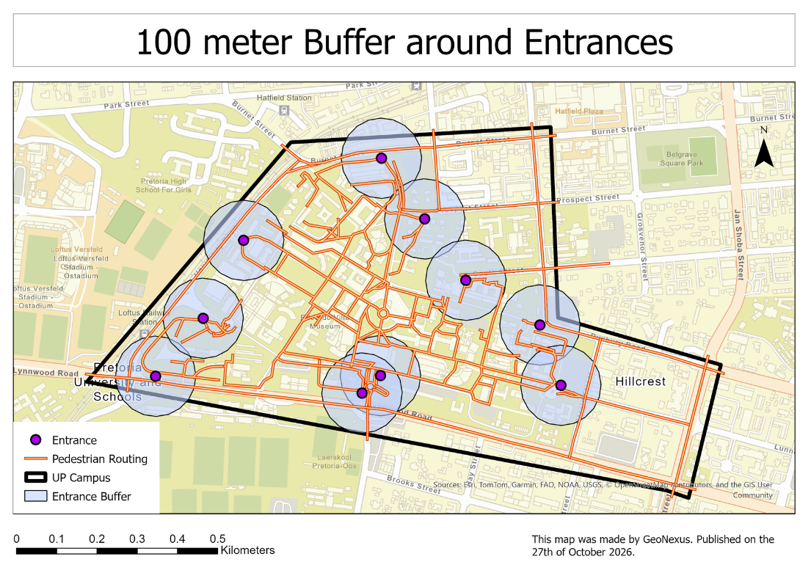
ent_buf)[cite: 1, 2]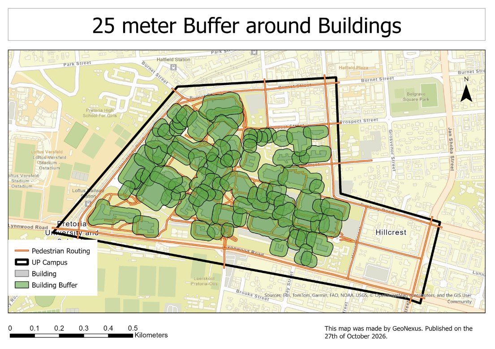
bld_buf)[cite: 1, 3]Step 3 intersects the entrance and building buffers (inter) to isolate high-traffic candidate zones that sit close to both building access points and main footpaths[cite: 4]. Step 4 extracts the centroid point of each overlapping polygon (cent) to serve as initial candidate locations[cite: 5].
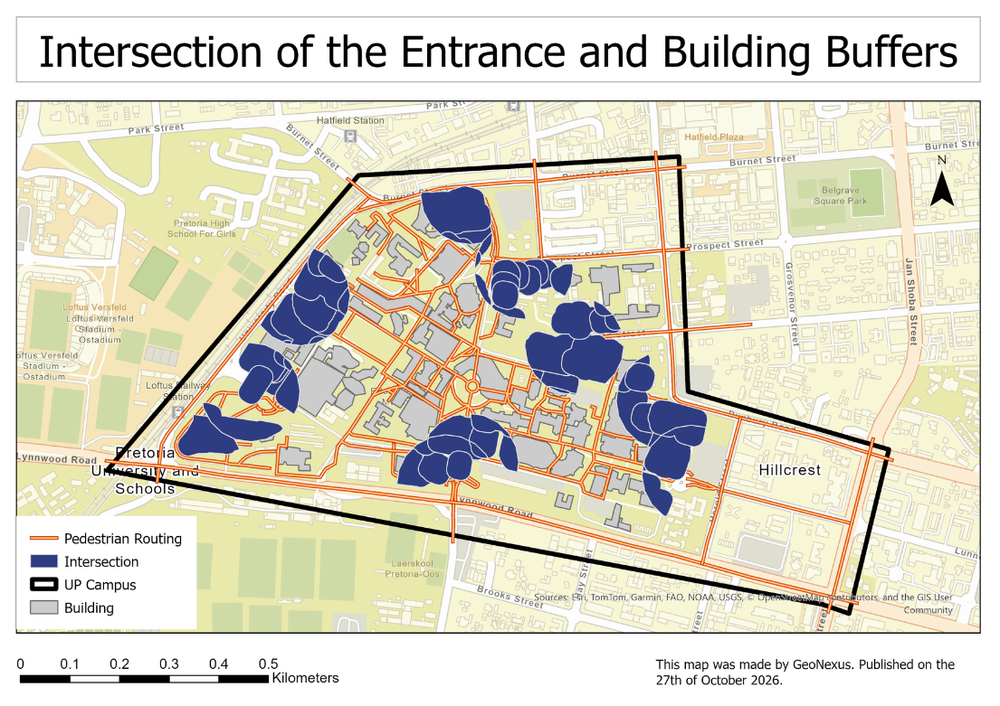
inter)[cite: 1, 4]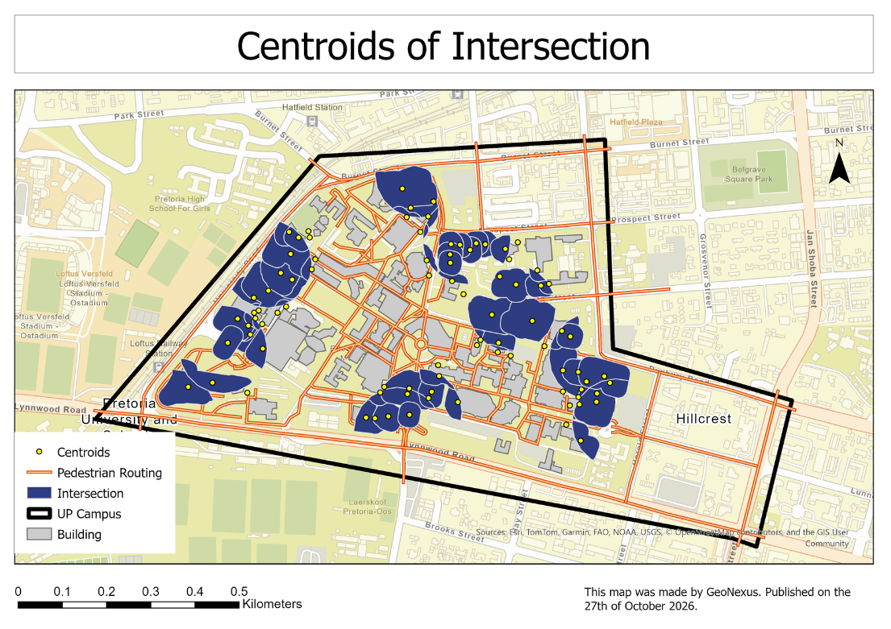
cent)[cite: 1, 5]Candidate points are snapped directly onto pedestrian pathways with a 5-meter tolerance (cent_path) using the Snap geometries to layer tool, ensuring all candidate display nodes rest directly on navigable routes[cite: 6].
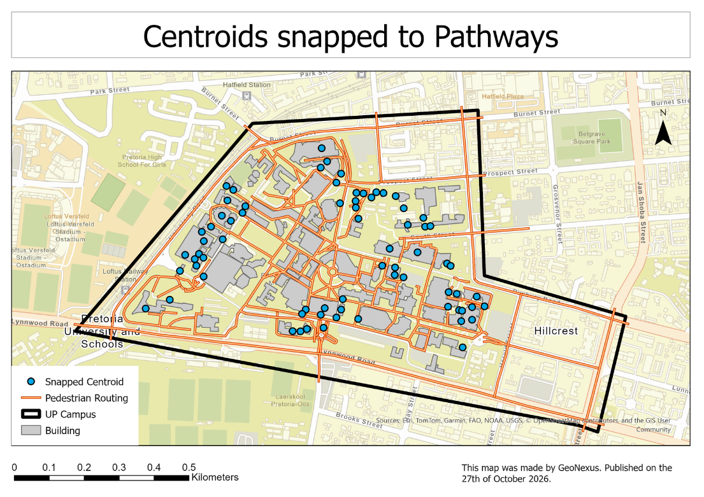
To avoid placing displays inside structures, Step 6 selects points intersecting building footprints (selec)[cite: 7]. Step 7 inverts this selection (inv_selec) to filter out unsuitable nodes and retain only points on open ground[cite: 7].
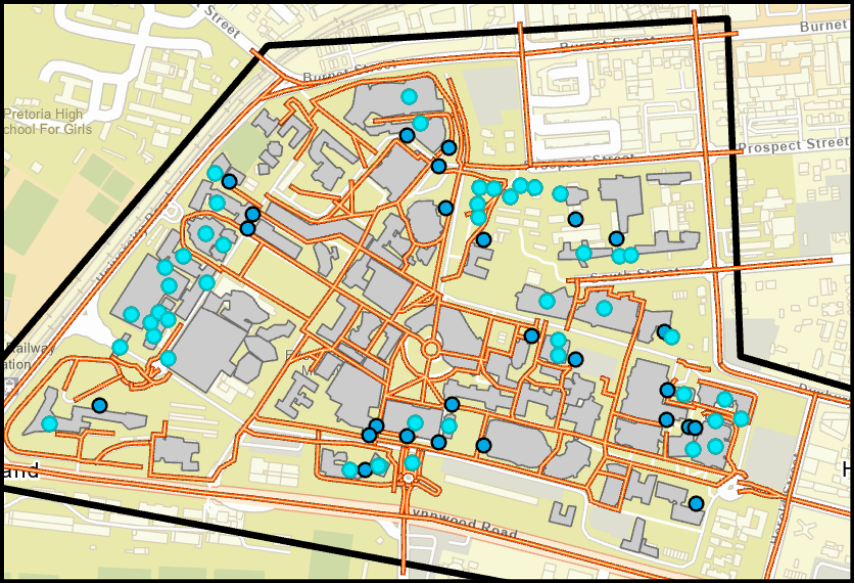
selec)[cite: 1, 7]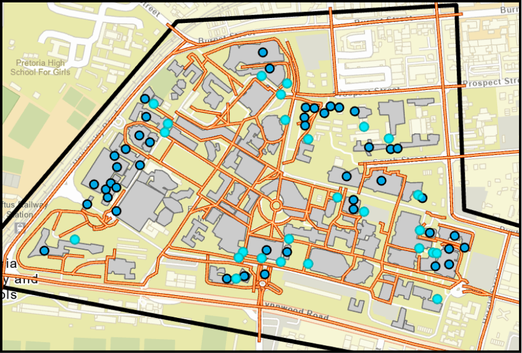
inv_selec)[cite: 1, 7]To prevent redundant screen placement near existing infrastructure, Step 8 selects candidate points within 120 meters of existing LCD displays (selec2)[cite: 8]. Step 9 inverts the selection (inv_selec2) to isolate unserved campus areas requiring new screens[cite: 8].
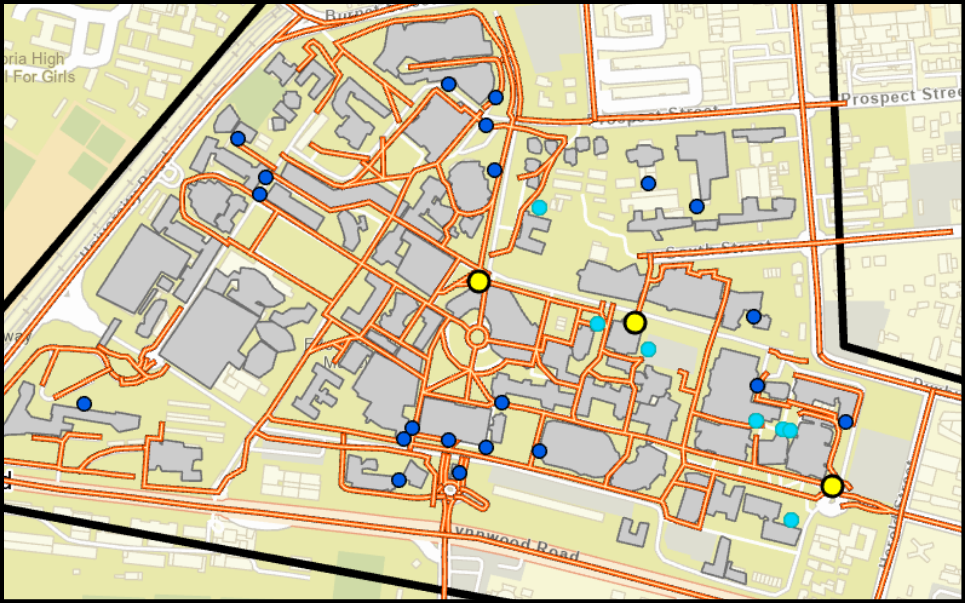
selec2)[cite: 1, 8]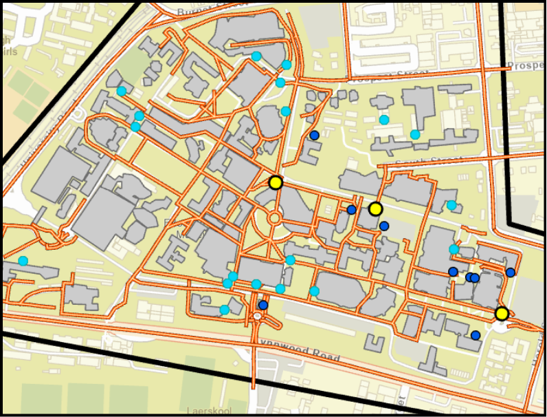
inv_selec2)[cite: 1, 8]To avoid local point clustering, Step 10 creates a 25-meter buffer around candidate open-ground points (25m_buffer)[cite: 9]. Step 11 removes overlapping buffer instances (remain), resulting in an evenly distributed point pattern[cite: 10].
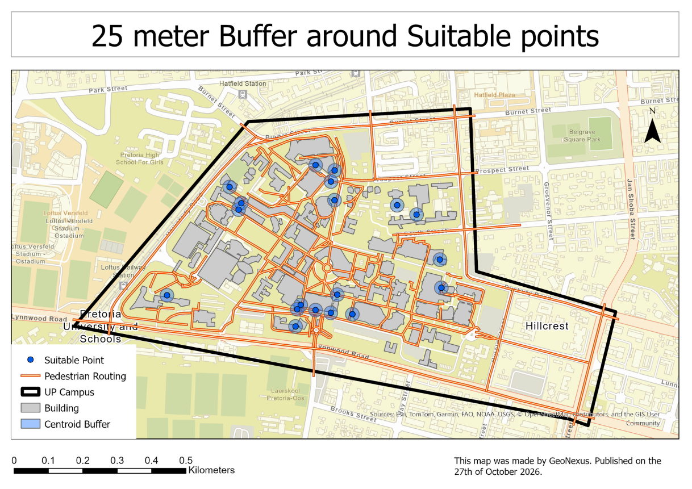
25m_buffer)[cite: 1, 9]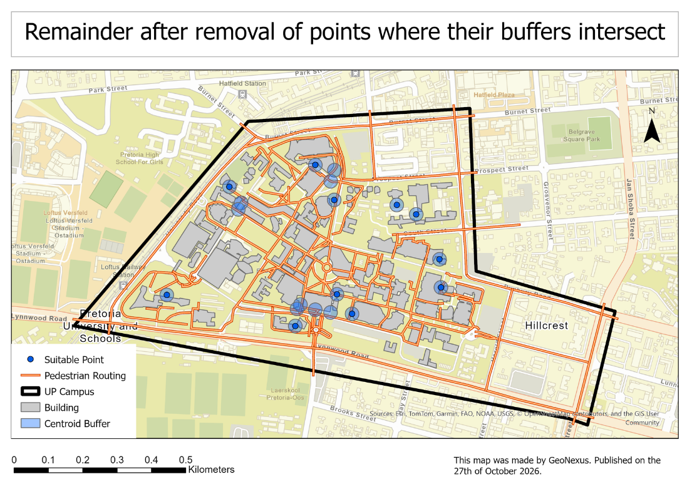
remain)[cite: 1, 10]Step 12 merges the optimized new display points with existing legacy LCD screens into a single layer (merg)[cite: 11]. When overlaid against the primary campus base map (campus), it yields the complete network visualization (final)[cite: 1, 11].
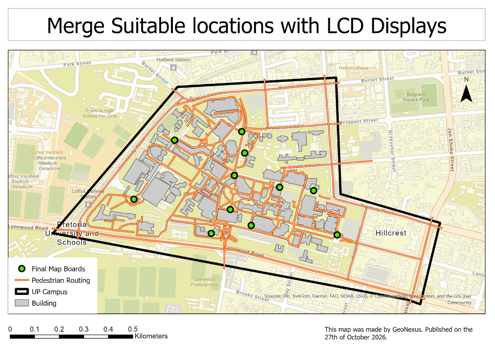
merg)[cite: 1, 11]final)[cite: 1]Explore the campus in a fully immersive 3D environment.
Visualise the campus data in a dynamic and interactive manner.
Access the campus data through our web-based platform.